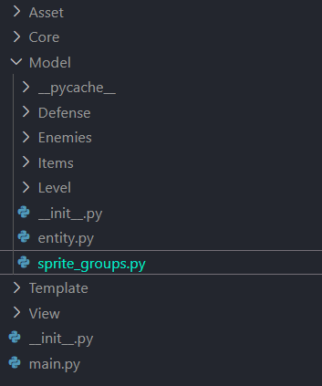
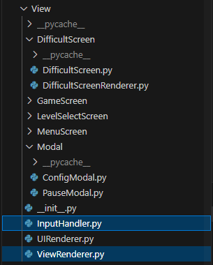
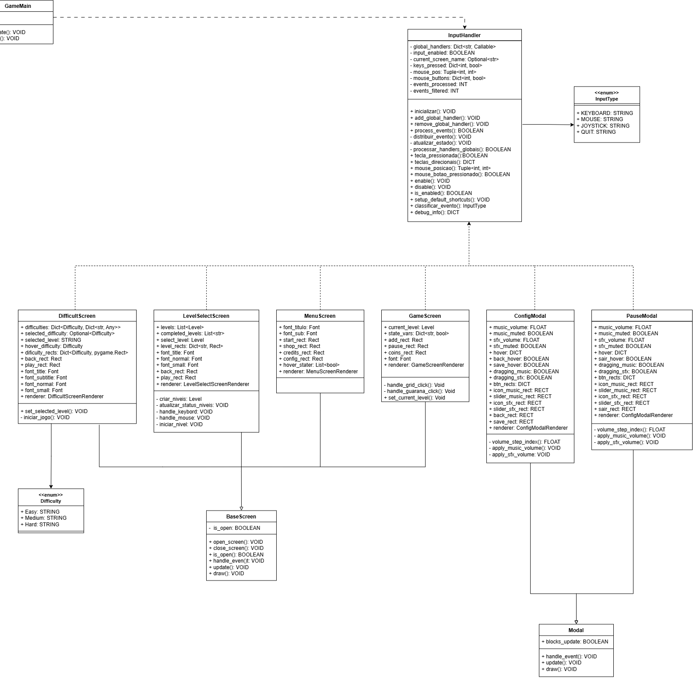
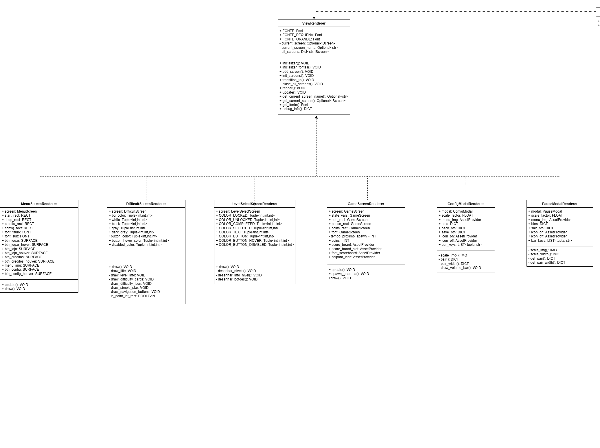

3.2. Módulo Padrões de Projeto GoFs Estruturais
3.2.1. Introdução
Os padrões de projeto Estruturais são focados em como classes e objetos podem ser compostos para formar estruturas mais complexas e flexíveis dentro de um sistema. O objetivo principal desses padrões é garantir que as relações entre os objetos sejam extensíveis, desacopladas e eficientes, permitindo a criação de sistemas mais robustos e fáceis de modificar. Eles descrevem formas de organizar as classes e objetos em um software, facilitando a construção de estruturas maiores e mais funcionais [1] [2] [3] [4].
Esses padrões são fundamentais para a criação de interfaces e implementações, especialmente quando se trabalha com herança, e ajudam a estabelecer uma organização eficiente das entidades do sistema. Ao organizar as classes e objetos, eles promovem o desacoplamento, permitindo que mudanças em uma parte do sistema não afetem drasticamente outras partes. Além disso, esses padrões facilitam a comunicação entre as entidades, tornando o código mais flexível, adaptável e mais fácil de entender e manter [5].
Participantes
Tabela 1: Participantes
| Nome | Função | Data | Hora |
|---|---|---|---|
| Caio Duarte | GoF Estrutural - Composite | 22/10/2025 | 20:00 |
| Danielle Soares | GoF Estrutural - Facade | 22/10/2025 | 11:00 |
| Enzo Emir | GoF Estrutural - Facade | 22/10/2025 | 11:00 |
| Laryssa Félix | GoF Estrutural - Composite | 22/10/2025 | 20:00 |
| Leticia Arisa | GoF Estrutural - Facade | 22/10/2025 | 11:00 |
| Marcelo Makoto | GoF Estrutural - Composite | 22/10/2025 | 20:00 |
| Maria Eduarda | GoF Estrutural - Composite | 22/10/2025 | 20:00 |
| Rafael Welz | GoF Estrutural - Composite | 22/10/2025 | 20:00 |
| Victor Pontual | GoF Estrutural - Facade | 20/10/2025 | 11:00 |
Fonte: Equipe do Projeto, 2025.
3.2.2. Metodologia
A pesquisa e o desenvolvimento do estudo dos Padrões de Projeto Comportamentais foram conduzidos seguindo uma abordagem prática e colaborativa, focada na aplicação real dos conceitos em um sistema de software existente.
3.2.2.1. Revisão e Seleção de Padrões
Iniciou-se com a revisão do catálogo de Padrões de Projeto Comportamentais da "Gang of Four" (GoF), conforme introduzido na seção anterior. Foram selecionados os padrões mais relevantes para resolver problemas de interação e comunicação observados no software interno do jogo, que está hospedado em um repositório de código separado.
3.2.2.2. Aplicação e Implementação
Os padrões de projeto selecionados (Facade e Composite) foram implementados diretamente no código-fonte do software interno do jogo. Esta etapa foi crucial para testar a eficácia dos padrões na redução do acoplamento, melhoria da legibilidade e aumento da flexibilidade do sistema.
3.2.2.3. Modelagem e Documentação UML
Para documentar visualmente a estrutura e a aplicação dos padrões, o software Draw.io foi utilizado para a criação de Diagramas UML (Linguagem de Modelagem Unificada). Esses diagramas (principalmente de Classe e/ou Sequência) serviram para mapear as novas interações e relações entre os objetos resultantes da aplicação dos padrões Comportamentais.
3.2.2.4. Demonstração e Colaboração
Para garantir a transparência do processo e documentar a participação de cada membro, as sessões de desenvolvimento, discussões técnicas e demonstrações de execução do código foram gravadas por meio da plataforma Microsoft Teams. Essas gravações serviram como artefatos de evidência, demonstrando a aplicação prática dos padrões, o fluxo de trabalho colaborativo e a contribuição individual dos membros da equipe na solução dos problemas de design.
3.2.3. Composite
O padrão Composite é um padrão de projeto estrutural que visa compor objetos em estruturas de árvore para representar hierarquias "parte-todo".
A intenção principal é permitir que os clientes (código que utiliza a estrutura) tratem objetos individuais e composições de objetos de maneira uniforme.
3.2.3.1. Diagrama UML
O GoF Estrutural Composite foi aplicado ao projeto, no seguinte código:

Fonte: Equipe do Projeto, 2025.
Aplicação do Padrão Composite (Gerenciamento de Sprites)
O trecho de código a seguir, extraído do arquivo principal de gerenciamento de sprites (sprite_groups.py) demonstra a implementação do Padrão Composite através da classe SpriteComposite.
Essa classe unifica a gestão de diversos grupos de sprites (caiporas, inimigos, projeteis, etc.) permitindo que operações como update() e draw() sejam executadas de forma transparente em todos os grupos de uma só vez.
import pygame
from Template.UIConfigs import *
class SpriteComposite:
"""Gerenciador unificado de todos os grupos de sprites do jogo."""
def __init__(self):
self.caiporas = pygame.sprite.Group()
self.inimigos = pygame.sprite.Group()
self.projeteis = pygame.sprite.Group()
self.guaranas = pygame.sprite.Group()
self._all_groups = [
self.projeteis,
self.caiporas,
self.inimigos,
self.guaranas
]
def update(self):
for group in self._all_groups:
group.update()
def draw(self, surface):
for group in self._all_groups:
group.draw(surface)
def reset(self):
for group in self._all_groups:
group.empty()
sprite_manager = SpriteComposite()
Portanto, assim ficou modelado em UML, o padrão Composite no código do jogo. Clique aqui para acessar:

Fonte: Caio Duarte, Laryssa Félix, Marcelo Matoko, Maria Eduarda, Rafael Schadt, 2025.
O diagrama acima ilustra a arquitetura de classes responsável pelo gerenciamento de sprites no jogo, evidenciando como o Padrão de Projeto Composite foi aplicado para unificar e organizar diferentes tipos de entidades (como personagens, inimigos, projéteis e defesas) sob uma mesma estrutura de controle.
No topo, encontra-se a classe SpriteComposite, que atua como o componente composto principal. Ela agrega diversos grupos de sprites — como caiporas, inimigos, projeteis e guaranas —, todos representados por instâncias de pygame.sprite.Group. Essa classe possui métodos como update() e draw(), que propagam as operações de atualização e renderização para todos os grupos internos, mantendo a hierarquia de forma transparente.
Logo abaixo, a classe Entity funciona como a classe base abstrata para todos os objetos que possuem representação visual e comportamento no jogo. Ela define atributos comuns, como:
image: superfície gráfica da entidade.rect: posição e área de colisão.health: quantidade de vida da entidade.update(): método genérico para atualização, que pode ser sobrescrito pelas subclasses.
As classes derivadas de Entity representam os tipos específicos de entidades do jogo, sendo elas:
Defesa: define estruturas defensivas com atributos de custo, estado atual e comportamento de bloqueio.Guarana: representa a moeda do jogo, possuindo atributos de velocidade, imagem e método de colisão (collide()).Arrow: modela flechas ou projéteis inimigos, com propriedades de dano e trajetória.Enemies: classe genérica para inimigos, contendo lógica de movimento, estado e ataque.
Além disso, há classes especializadas que herdam dessas entidades principais:
Caipora: herda deDefesae adiciona comportamentos específicos, como animações, ataques e controle de tempo de ação.BichoPapao: herda deEnemiese especializa os parâmetros de dano, velocidade e animações de ataque.
Essa organização reflete o uso do Composite aliado à herança hierárquica:
- O
SpriteCompositeorquestra todos os grupos de entidades do jogo. - Cada entidade, derivada de
Entity, atua como um componente individual dentro dessa estrutura unificada.
Em resumo, o diagrama mostra uma hierarquia bem definida e extensível, em que o Composite (SpriteComposite) gerencia múltiplos objetos (entidades e subclasses) como se fossem um único conjunto, favorecendo a coesão e o baixo acoplamento entre os módulos do sistema.
3.2.3.2. Opniões dos Participantes
A elaboração desta etapa foi realizada de forma colaborativa em reunião pelo Discord, não gravada, onde os três membros designados estiveram presentes e participaram ativamente da discussão/elaboração.
O processo da execução do código foi feito no Visual Studio Code e a elaboração da UML foi feita no Draw.io, ferramenta que possibilitou a criação e edição simultânea do diagrama, garantindo integração e alinhamento entre os integrantes.
Ao longo da atividade, cada integrante trouxe ideias e feedbacks que ajudaram a consolidar um resultado alinhado com a visão do grupo como um todo. Esse processo coletivo contribuiu tanto para a consistência do diagrama quanto para o fortalecimento da colaboração na equipe.
Caio Duarte
No início, achei o padrão Composite um pouco confuso de entender, mas com a ajuda dos meus colegas consegui compreender melhor como ele funciona e de que forma poderia ser aplicado ao nosso projeto. No final, percebi que é um padrão muito interessante e útil para organizar a estrutura do código, não só no nosso projeto, mas em praticamente qualquer outro que exija uma hierarquia bem definida entre objetos.
Laryssa Félix
Assim que comecei a explorar este conteúdo achei um pouco abstrato, mas após ver exemplos práticos que tudo começou a fazer sentido. Percebi que esse padrão é muito útil para organizar as sprites em estruturas hierárquicas, o que deixou nosso código mais limpo e fácil de manter.
Marcelo Matoko
No começo, eu tive um pouco de dificuldade em entender como o Composite funciona e como implementá-lo no projeto. Porém, ao estudar mais sobre o assunto e pesquisar por exemplos, a implementação do Composite se tornou mais simples e ajudou a estruturar os sprites das entidades de uma forma mais organizada e funcional. Isso ajudou a organizar parte do projeto e deixá-lo mais legível.
Maria Eduarda Andrade
Assim como em todo começo, eu me perdi um pouco em como aplicar o Composite dentro da visão do nosso projeto. Depois de algumas discussões e pesquisas com a equipe, percebi que ele seria muito útil para organizar a estrutura do código e dar mais clareza ao que estávamos construindo. No fim, o padrão ajudou a tratar partes do jogo como um todo, deixando a arquitetura mais limpa e alinhada aos princípios do próprio Composite.
Rafael Schadt
De fato, no começo, o padrão Composite me pareceu um exagero de abstração. Achei que a complexidade de criar uma interface comum só para forçar o tratamento uniforme de objetos simples e compostos era desnecessária para o nosso caso. Pensei que uma estrutura de classes mais direta já resolveria. Contudo, ao longo da implementação e conforme a hierarquia de objetos do projeto foi crescendo, percebi que essa "complicação" inicial se tornou a nossa maior aliada. Hoje, vejo que é um padrão essencial para manter a escalabilidade e a clareza do código em qualquer projeto que envolva uma estrutura de árvore ou composição, provando que a complexidade inicial valeu a pena pela organização final.
3.2.3.3. Vídeo Demonstrativo
Foi gravado, na plataforma do Microsoft Teams, uma reunião para a modelagem UML do padrão Composite e a execução do código além da explicação do mesmo. Clique aqui para acessar.
3.2.4. Facade
O padrão Facade (Fachada) é um padrão de projeto estrutural do Gang of Four (GoF) que visa simplificar a interação com sistemas complexos, fornecendo uma interface unificada para um conjunto de classes, bibliotecas ou subsistemas inteiros.
Em vez de o código cliente precisar conhecer e interagir diretamente com as partes internas e detalhadas do sistema, ele se comunica apenas com a fachada, que encapsula e coordena as chamadas para os componentes corretos. Assim, o objetivo principal é esconder a complexidade interna e reduzir o acoplamento entre o cliente e o sistema.
3.2.4.1. Estrutura em código
O GoF Estrutural Facade foi aplicado ao projeto, no seguinte código:

Aplicação do Padrão Facade (Gerenciamento de Input e Renderização)
Os trechos a seguir, extraídos dos arquivos InputHandler.py e ViewRenderer.py, demonstram a aplicação do Padrão de Projeto Facade no projeto. As classes InputHandler e ViewRenderer encapsulam a complexidade dos sistemas de entrada e renderização, oferecendo interfaces simplificadas e unificadas para o restante do jogo. Com isso, o código cliente não precisa lidar diretamente com eventos do Pygame nem com a lógica de transição entre telas, mantendo o baixo acoplamento e a alta coesão.
import pygame
from typing import Callable, Dict, Optional
class InputHandler:
"""
Facade responsável por capturar, distribuir e processar eventos de entrada.
Esconde a complexidade do sistema de input do Pygame.
"""
_global_handlers: Dict[str, Callable] = {}
_keys_pressed: Dict[int, bool] = {}
_mouse_buttons: Dict[int, bool] = {}
_mouse_pos: tuple = (0, 0)
_input_enabled = True
@classmethod
def inicializar(cls):
"""Inicializa o Facade de Input."""
cls._global_handlers.clear()
cls._keys_pressed.clear()
print("[InputHandler] Facade de Input inicializado")
@classmethod
def process_events(cls) -> bool:
"""Interface simplificada para processar todos os eventos."""
if not cls._input_enabled:
pygame.event.clear()
return True
for event in pygame.event.get():
if event.type == pygame.QUIT:
return False
cls._atualizar_estado(event)
if cls._processar_handlers_globais(event):
continue
cls._distribuir_evento(event)
return True
@classmethod
def setup_default_shortcuts(cls):
"""Registra atalhos globais padrão (ex: ESC para menus e pausas)."""
def handler_esc(event):
if event.type == pygame.KEYDOWN and event.key == pygame.K_ESCAPE:
print("[InputHandler] ESC pressionado — alternando telas ou modais")
return True
return False
cls._global_handlers["esc"] = handler_esc
import pygame
from typing import Dict, Optional
from View.Interfaces import IScreen
class ViewRenderer:
"""
Facade responsável por gerenciar telas, transições e renderização.
Esconde a complexidade do sistema de telas e recursos gráficos.
"""
_current_screen: Optional[IScreen] = None
_current_screen_name: Optional[str] = None
_all_screens: Dict[str, IScreen] = {}
FONTE = None
@classmethod
def inicializar(cls):
"""Inicializa fontes e prepara o sistema de renderização."""
cls.FONTE = pygame.font.SysFont('Arial', 30)
print("[ViewRenderer] Fontes inicializadas")
@classmethod
def add_screen(cls, name: str, screen: IScreen):
"""Adiciona uma nova screen ao sistema."""
cls._all_screens[name] = screen
print(f"[ViewRenderer] Screen '{name}' registrada")
@classmethod
def transition_to(cls, name: str):
"""Gerencia transição entre screens (fecha a atual e abre a nova)."""
if cls._current_screen:
cls._current_screen.close_screen()
cls._current_screen = cls._all_screens.get(name)
if cls._current_screen:
cls._current_screen.open_screen()
cls._current_screen_name = name
print(f"[ViewRenderer] Transição para '{name}' concluída")
@classmethod
def render(cls, surface: pygame.Surface):
"""Renderiza a screen e modais ativos."""
from Core.ScreenManager import ScreenManager
if cls._current_screen:
cls._current_screen.draw(surface)
for modal in ScreenManager._modals:
modal.draw(surface)
Com a utilização dessas fachadas:
-
InputHandler: atua como uma fachada para o subsistema de eventos do Pygame. Ele esconde a complexidade de capturar a fila de eventos, verificar o tipo de cada evento (teclado, mouse), e decidir para qual componente o evento deve ser enviado. -
ViewRenderer: serve como uma fachada para todo o subsistema de visualização. Em vez de cada parte do código ter que gerenciar diretamente a troca de telas, o carregamento de fontes e a renderização de múltiplas camadas , o ViewRenderer oferece uma interface simples.
Assim, sem precisar conhecer a complexidade interna dos subsistemas, o código cliente pode simplesmente chamar:
InputHandler.process_events()
ViewRenderer.transition_to("menu")
3.2.4.2. Diagrama UML
Portanto, assim ficou modelado em UML o padrão Facade no código do jogo. Clique aqui para acessar:
O Diagrama completo abaixo mostra todas as classes e relações do padrão, permitindo entender a arquitetura global do Facade no jogo. Como o diagrama ficou extenso, logo a seguir terão imagens com zoom em cada fachada (InputHandler e ViewRenderer).
Figura 2: Diagrama UML completo.

Figura 3: Diagrama com zoom na fachada InputHandler.

Figura 4: Diagrama com zoom na fachada ViewRenderer.
O diagrama acima ilustra a arquitetura de gerenciamento dos subsistemas centrais do jogo, evidenciando como o Padrão de Projeto Facade foi aplicado para unificar e simplificar drasticamente a interação com os complexos sistemas de Entrada (Input) e Renderização (View).
No topo, encontra-se a classe GameMain, que atua como o cliente principal e orquestrador da arquitetura. Ela contém o game loop e orquestra o fluxo do jogo, mas, em vez de lidar diretamente com a complexidade dos eventos do Pygame ou com o gerenciamento de telas, ela delega essas responsabilidades. GameMain possui uma relação de Dependência com as duas fachadas, pois ela invoca seus métodos estáticos (.inicializar(), .process_events()) para controlar o ciclo de vida e a execução delas.
As fachadas são os componentes centrais que definem o padrão:
-
InputHandler(Fachada de Entrada): Atua como um ponto de acesso unificado para todo o subsistema de eventos.- Responsabilidade: Encapsula a lógica de capturar a fila de eventos brutos do Pygame, processá-los (
process_events()), rastrear estados (comomouse_posicao()) e classificar eventos.
- Responsabilidade: Encapsula a lógica de capturar a fila de eventos brutos do Pygame, processá-los (
-
ViewRenderer(Fachada de Renderização): Serve como o ponto de acesso unificado para todo o subsistema de visualização.- Responsabilidade: Encapsula a complexidade de gerenciar qual tela está ativa, orquestrar transições (
transition_to()), comandar a renderização (render()) e gerenciar recursos gráficos compartilhados (como fontes viaget_fonte()).
- Responsabilidade: Encapsula a complexidade de gerenciar qual tela está ativa, orquestrar transições (
Além do GameMain, o diagrama detalha outros clientes que dependem dessas fachadas:
-
Clientes de Renderização: As classes
MenuScreenRenderer,DifficultScreenRenderer,LevelSelectionScreenRenderer,GameScreenRenderer,ConfigModalRendererePauseModalRenderersão também clientes do padrão. Elas dependem da fachadaViewRendererpara obter acesso a recursos gráficos centralizados, como fontes (get_fonte()), e para executar suas lógicas de desenho. -
Clientes de Entrada: Notavelmente, o diagrama mostra que as classes
MenuScreen,DifficultScreen,LevelSelectionScreen,GameScreen,ConfigModalePauseModalsão também clientes do padrão. Elas dependem da fachadaInputHandlerpara simplificar o processamento de eventos, usando métodos comoclassificar_evento()emouse_posicao()para implementar suas lógicas de interação específicas (como cliques em botões).
Essa organização reflete o uso claro do Facade para criar pontos de acesso simplificados:
-
O
GameMain(cliente principal) permanece limpo e focado, interagindo apenas com chamadas de alto nível comoInputHandler.process_events()eViewRenderer.render(). -
As fachadas escondem toda a complexidade interna (a fila de eventos do Pygame, a lógica de transição de telas, o gerenciamento de fontes e a distribuição de eventos), garantindo que os clientes (
GameMain,Screens,Renderers) permaneçam desacoplados dos detalhes de implementação desses subsistemas.
Em resumo, o diagrama mostra uma arquitetura onde as fachadas atuam como "porteiros" simplificados para os sistemas de entrada e visualização. Isso permite que tanto o GameMain quanto as telas e modais operem em um nível de abstração muito mais alto, facilitando a manutenção e a extensão do código.
3.2.4.2. Vídeo de Execução
Foi gravado, na plataforma do Microsoft Teams, uma reunião para a modelagem UML do padrão Facade.
Clique aqui para acessar a parte 1 e aqui para acessar a parte 2.
Vídeo parte 1: Execução do diagrama UML.
Vídeo parte 2: Execução do diagrama UML e explicação ao final
3.2.4.3. Opiniões dos Participantes
Danielle Soares
Minha experiência implementando o padrão Facade foi bastante desafiadora, especialmente devido à complexidade do diagrama UML, que envolvia muitas classes com diversos métodos e atributos. Inicialmente, compreender o funcionamento do Facade e implementar a base das interfaces foi relativamente tranquilo. Entretanto, adaptar o código já existente a uma arquitetura mais formal exigiu atenção detalhada, pois foi necessário analisar cuidadosamente as conexões entre as classes e identificar formas de otimizar a estrutura e o fluxo do sistema.
Enzo Emir
Minha compreensão do padrão Facade foi bastante intuitiva. Sempre acreditei que centralizar as interações em um único ponto era fundamental para manter uma estrutura de código robusta e organizada. O Facade é, essencialmente, a formalização desse conceito, provendo uma 'fachada' que esconde a complexidade interna e facilita a evolução do sistema.
Leticia Arisa
Achei muito interessante estudar sobre o Facade, já que ele ajuda a deixar o código organizado e simplifica os sistemas complexos. Depois de estudar mais sobre o Facade, percebi que ele é uma excelente estratégia para criar uma interface única e mais fácil de usar.
Victor Pontual
Foi interessante aprender sobre o padrão Facade de forma oficial, pois percebi que eu já implementava conceitos similares de maneira casual sem conhecer a teoria formal por trás. No meu código, eu costumava criar o que chamava de "hub de requisições" - classes centralizadoras que concentravam operações relacionadas para evitar repetição de código e facilitar manutenção. Por exemplo, ao invés de espalhar chamadas diretas a APIs ou bibliotecas por todo o código, eu criava um ponto único que encapsulava essa complexidade.
3.2.6 Referências Bibliográficas
1. GAMMA, Erich et al. Padrões de Projeto: Soluções Reutilizáveis de Software Orientado a Objetos. Tradução de C. F. Lucena e F. S. C. da Silva. Porto Alegre: Bookman, 2007. (Título original: Design Patterns: Elements of Reusable Object-Oriented Software).
2. DEV MEDIA. Padrão de Projeto Facade em Java. DevMedia. Disponível em: https://www.devmedia.com.br/padrao-de-projeto-facade-em-java/26476. Acesso em: 23 out. 2025.
3. REFACTORING.GURU. Facade. Refactoring.Guru. Disponível em: https://refactoring.guru/pt-br/design-patterns/facade. Acesso em: 23 out. 2025.
4. BLOG GRAN CURSOS ONLINE. Padrões de Projetos GOF: Padrões Estruturais. Disponível em: https://blog.grancursosonline.com.br/padroes-de-projetos-gof-padroes-estruturais/. Acesso em: 23 out. 2025.
5. REFACTORING GURU. Padrões Estruturais. Disponível em: https://refactoring.guru/pt-br/design-patterns/structural-patterns. Acesso em: 23 out. 2025.
6. MILENE. Arquitetura e Desenho de Software - Aula GoFs Estruturais. Profa. Milene. Disponível em: https://aprender3.unb.br/pluginfile.php/3178397/mod_page/content/1/Arquitetura%20e%20Desenho%20de%20Software%20-%20Aula%20GoFs%20Estruturais%20-%20Profa.%20Milene.pdf. Acesso em: 23 out. 2025.
7. FIGUEIREDO, Roberto Tenório. Dissertação: Arquitetura e Padrões de Projeto em Sistemas de Software (Dissertação de Mestrado). Universidade Federal de Pernambuco, 2006. Disponível em: https://repositorio.ufpe.br/bitstream/123456789/11981/1/DISSERTA%c3%87%c3%83O%20Roberto%20Tenorio%20Figueiredo.pdf. Acesso em: 23 out. 2025.
Histórico de Versões 📅
| Versão | Data | Descrição | Autor(es) | Revisor(es) |
|---|---|---|---|---|
0.1 |
22/10/2025 | Adicionando Documentação GoF Estrutural | Maria Eduarda Andrade, Rafael Welz | Caio Duarte |
0.2 |
24/10/2025 | Adicionando Documentação do GoF Facade | Danielle Soares, Enzo Emir, Leticia Arisa, Victor Pontual | Maria Eduarda Andrade |
0.3 |
24/10/2025 | Adição da seção de opiniões dos participantes do Facade e opinião pessoal | Victor Pontual | Danielle Soares, Enzo Emir, Leticia Arisa, Victor Pontual |
0.4 |
24/10/2025 | Vídeo de execução (Facade) | Danielle Soares, Enzo Emir, Leticia Arisa, Victor Pontual | Marcelo Makoto |